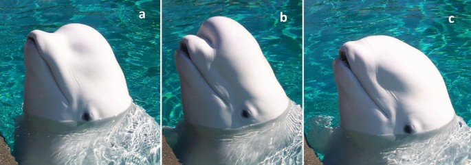

Beluga whale: body, skin and finite movement studies
The existing beluga has been rebuilt around a freely downloadable CC0 control surface. The new adult-white exterior has a rounder forehead, short broad rostrum, softer chin and cervical transition, substantial rounded pectorals, a low dorsal ridge and broader horizontal flukes. All 337 species remain in the collection.
This is a reference-led educational reconstruction. The starting asset is contributor-reported AI generated; it is not a living scan or scientific validation. Unrelated, uncalibrated stills cannot recover a common individual, exact metric dimensions, tissue mechanics or continuous movement timing.
Dimensions and movement
Measured context comes from three captive belugas in Fish (1998). At a selected half body-length per second, its beluga regressions guide stroke frequency, vertical heave and fluke pitch. The model remains an anchored display with selected spatial interpolation and timing.
Kane and Marshall (2009) supports distinct preparation, opening, gular depression and closure, with lateral gape occlusion. The published abstract and preliminary SICB abstract were inspected; the final full article was inaccessible in this pass. Eight display seconds are a selected slow study, not a measured feeding duration. The wider Open mouth action is an anatomy display.
The living-skin study guides restraint in surface relief. New ivory, faint scar, normal and roughness fields are numerical display choices; they are not measured reflectance or a micron-scale fit.
Starting model and the reconstruction
3D Assets / CC0 beluga downloads without signing in. The untouched 124,068-byte GLB is retained, with SHA-256 80a98d1efd0148bce949f0dedb233b122af104302fd1a8609da47489eca82dc9. It has no textures, skeleton or animation. Its simplified appendages and facial marks were replaced; 81 body control-ring stations were decoded and extensively resculpted/resampled. New appendages, eyes/lids, blowhole, lips, oral anatomy and numerical skin maps are authored additions.
The selected oral display has 36 worn peg teeth, gums, palate and tongue. Gular-floor movement, lip shape and joins remain approximations, without fitted muscles, pressure, water/prey transport or swallowing. Creator attribution and original CC0 rights remain distinct from the archive’s MIT code and authored additions.
Reference photographs and supplied files
All 28 supplied files were privately inspected: 25 unique byte hashes, with duplicates 24/20, 25/16 and 26/15. Files 15, 17–20, 24 and 26 are artist renders; other files include aquarium imagery, a watermark and a video screenshot. They guided qualitative shape and posture comparisons. Their pixels are neither projected onto the mesh nor redistributed.
Unchanged whole main reference: Lucy Keith-Diagne, CC BY 4.0. Portland, Maine, 16 June 2004. Derivative access only; no new original-resolution acquisition. This frame is not a native-range, population or measured neck-motion record.

Whole Figure 1: Justin T. Richard, Isabelle Pellegrini and Rachael Levine (2024), Animal Cognition, CC BY 4.0. Trained captive contour comparisons; no inferred emotions or acoustic simulation. Image unchanged apart from browser sizing.
Actual views and review findings
42 actual compiled states were individually inspected: five whole-body axes, six anatomical foci, posterior strokes, quiet glide, head turning, melon contours, feeding stages and separate oral display. Anatomical focus buttons choose their own camera. These are software compatibility renders; final WebGL optics and natural tissue appearance are not independently established.
Whole reference and actual captured states 1–2. Reference: Ekki3, CC BY 4.0. Complete frame resized, without a crop; model images retain their capture credits. Different pose and illumination, no one-to-one specimen or kinematic fit.
Whole reference and actual captured states 3–4. Reference: Ekki3, CC BY 4.0. Complete frame resized, without a crop; model images retain their capture credits. Different pose and illumination, no one-to-one specimen or kinematic fit.
Whole reference and actual captured states 5–6. Reference: Ekki3, CC BY 4.0. Complete frame resized, without a crop; model images retain their capture credits. Different pose and illumination, no one-to-one specimen or kinematic fit.
Whole reference and actual captured states 7–8. Reference: Ekki3, CC BY 4.0. Complete frame resized, without a crop; model images retain their capture credits. Different pose and illumination, no one-to-one specimen or kinematic fit.
Whole reference and actual captured states 9–10. Reference: Ekki3, CC BY 4.0. Complete frame resized, without a crop; model images retain their capture credits. Different pose and illumination, no one-to-one specimen or kinematic fit.
Whole reference and actual captured states 11–12. Reference: Ekki3, CC BY 4.0. Complete frame resized, without a crop; model images retain their capture credits. Different pose and illumination, no one-to-one specimen or kinematic fit.
Whole reference and actual captured states 13–14. Reference: Ekki3, CC BY 4.0. Complete frame resized, without a crop; model images retain their capture credits. Different pose and illumination, no one-to-one specimen or kinematic fit.
Whole reference and actual captured states 15–16. Reference: Ekki3, CC BY 4.0. Complete frame resized, without a crop; model images retain their capture credits. Different pose and illumination, no one-to-one specimen or kinematic fit.
Whole reference and actual captured states 17–18. Reference: Ekki3, CC BY 4.0. Complete frame resized, without a crop; model images retain their capture credits. Different pose and illumination, no one-to-one specimen or kinematic fit.
Whole reference and actual captured states 19–20. Reference: Ekki3, CC BY 4.0. Complete frame resized, without a crop; model images retain their capture credits. Different pose and illumination, no one-to-one specimen or kinematic fit.
Whole reference and actual captured states 21–22. Reference: Ekki3, CC BY 4.0. Complete frame resized, without a crop; model images retain their capture credits. Different pose and illumination, no one-to-one specimen or kinematic fit.
Whole reference and actual captured states 23–24. Reference: Ekki3, CC BY 4.0. Complete frame resized, without a crop; model images retain their capture credits. Different pose and illumination, no one-to-one specimen or kinematic fit.
Whole reference and actual captured states 25–26. Reference: Ekki3, CC BY 4.0. Complete frame resized, without a crop; model images retain their capture credits. Different pose and illumination, no one-to-one specimen or kinematic fit.Whole reference and actual captured states 27–28. Reference: Ekki3, CC BY 4.0. Complete frame resized, without a crop; model images retain their capture credits. Different pose and illumination, no one-to-one specimen or kinematic fit.
Whole reference and actual captured states 29–30. Reference: Ekki3, CC BY 4.0. Complete frame resized, without a crop; model images retain their capture credits. Different pose and illumination, no one-to-one specimen or kinematic fit.Whole reference and actual captured states 31–32. Reference: Ekki3, CC BY 4.0. Complete frame resized, without a crop; model images retain their capture credits. Different pose and illumination, no one-to-one specimen or kinematic fit.
Whole reference and actual captured states 33–34. Reference: Ekki3, CC BY 4.0. Complete frame resized, without a crop; model images retain their capture credits. Different pose and illumination, no one-to-one specimen or kinematic fit.
Whole reference and actual captured states 35–36. Reference: Ekki3, CC BY 4.0. Complete frame resized, without a crop; model images retain their capture credits. Different pose and illumination, no one-to-one specimen or kinematic fit.
Whole reference and actual captured states 37–38. Reference: Ekki3, CC BY 4.0. Complete frame resized, without a crop; model images retain their capture credits. Different pose and illumination, no one-to-one specimen or kinematic fit.
Whole reference and actual captured states 39–40. Reference: Ekki3, CC BY 4.0. Complete frame resized, without a crop; model images retain their capture credits. Different pose and illumination, no one-to-one specimen or kinematic fit.Whole reference and actual captured states 41–42. Reference: Ekki3, CC BY 4.0. Complete frame resized, without a crop; model images retain their capture credits. Different pose and illumination, no one-to-one specimen or kinematic fit.
The interactive studies run in the archive. A GLB download is a static neutral-pose mesh; it does not contain these study animations. Scale remains normalized.
Download the separate open-mouth static GLB. This selected anatomy pose includes 36 teeth and the tongue. Both files serialize the active reconstruction directly, with byte-identical embedded numerical skin maps, no skeleton and no animation clips.
Remaining work
Full local software suite: 406 passed, zero failed. These checks establish software/source properties and exact resets, not biological accuracy. Publication proof records final build, later metadata checks and live verification separately.
Selected adult-white phenotype; sex, stock, body condition and exact metric dimensions are unresolved. Uncalibrated mixed photos cannot establish one individual or photogrammetric scale.
Body/appendage transitions, cervical motion, lip seals and tongue/gular displacements are selected exterior approximations. No fitted joints, muscle mechanics, tissue-volume conservation or complete internal anatomy.
No solved swimming trajectory, thrust, buoyancy, fluid pressure, prey transport, swallowing, breathing or echolocation; social meanings cannot be read from melon shape or a smile-like jawline.
Software compatibility lighting reviewed separately; natural tissue optics and final WebGL optical fidelity are not independently established.
Observed software-view limits: faint fine skin detail, geometric lip rims and shoulder joins, subtle gular displacement and tiny ridge-edge raster marks. The oral field remains simplified; these views do not establish photorealistic living tissue.
Other 336 record objects and all identity, taxonomy, photograph and occurrence fields are preserved. All prior 36 artist source files and metadata remain unchanged. No schedules were enabled and no next species was started.